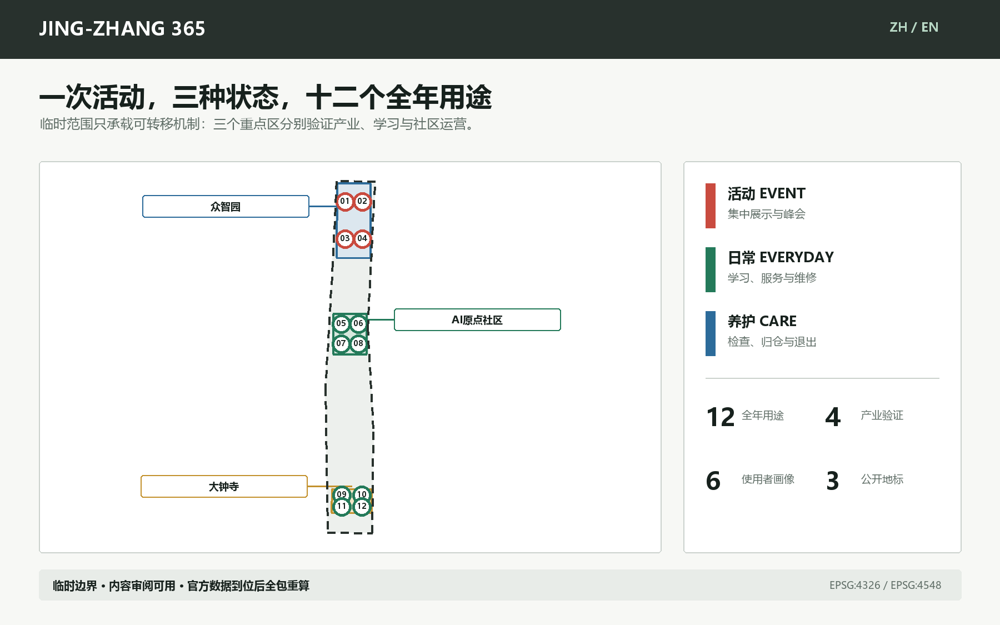
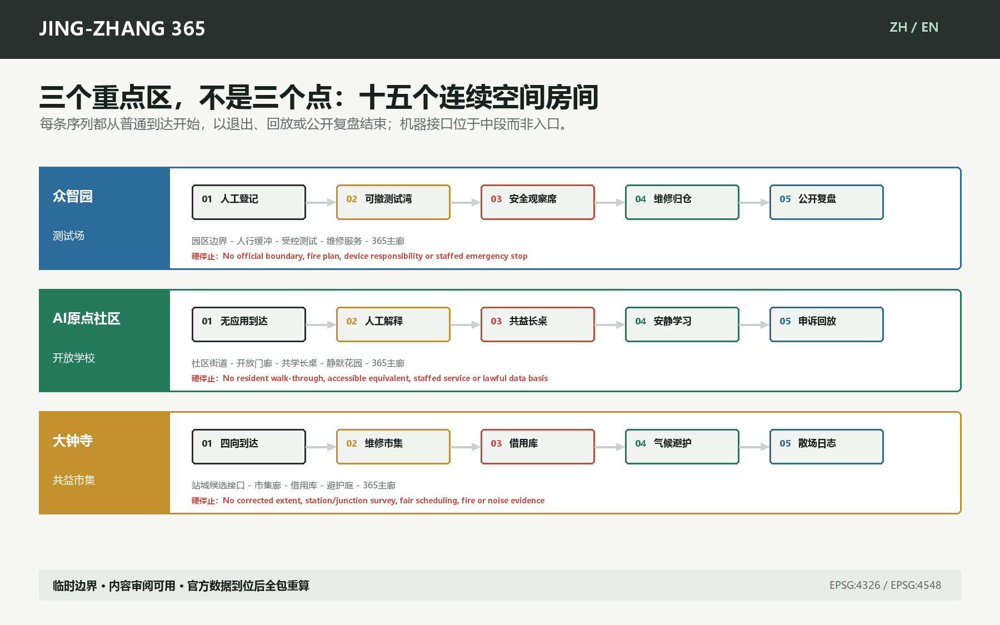
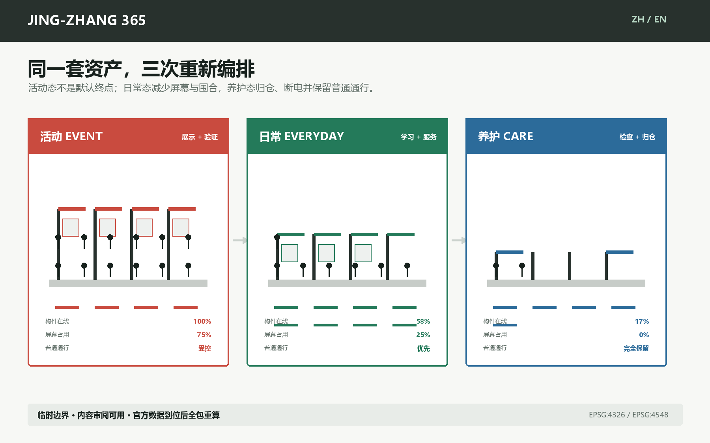
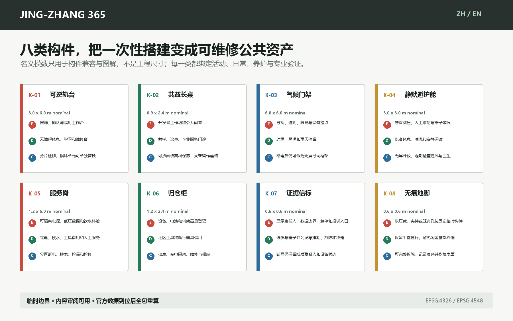
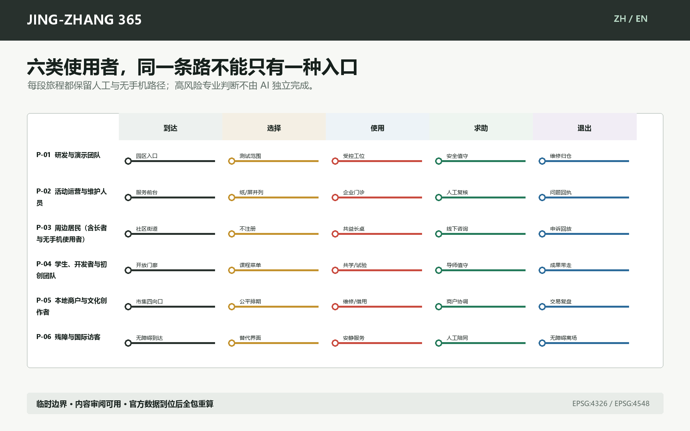
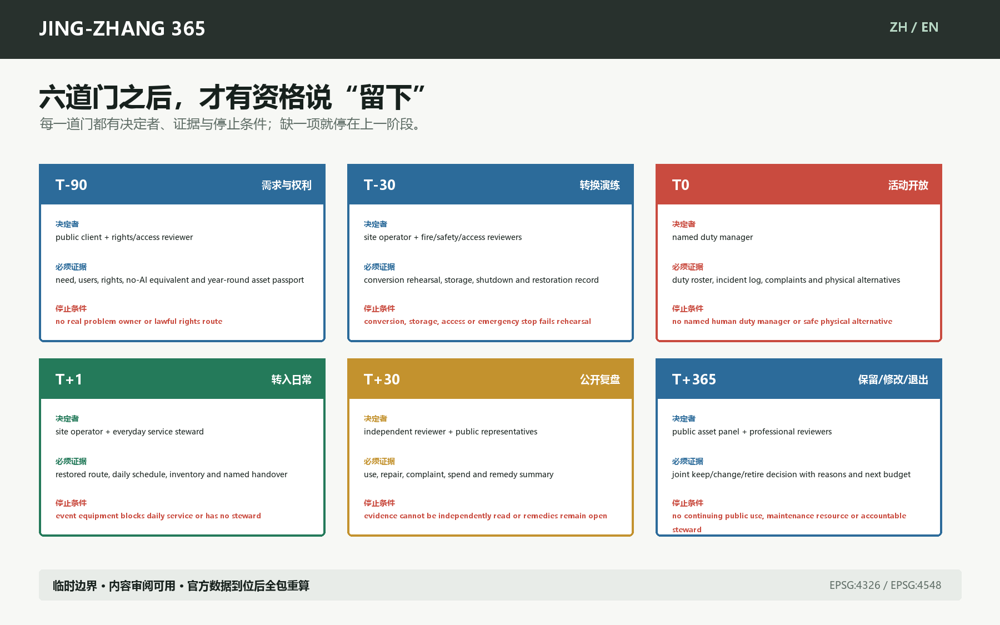

S-01全球AI展示转日常验证场众智园
- 活动
- 模块化展台演示模型、终端和工业系统。
- 日常
- 展台转为预约式兼容性、安全性和可维护性验证工位。
- 养护
- 断电、数据擦除、设备归仓并公布故障与复用记录。
停用: 安全隔离失效、数据来源不明或人工复核缺席即停用。

当前环境无法显示 WebGL，已切换静态总图。每个一次性 AI 场景，都要留下一个全年公共用途。
一条公共生活主廊、三处原型、九条纵横联系、十二个可停用场景；线位和范围必须随官方资料重算。
从普通到达、人工选择到受控接口、恢复空间与退出回放。


构件名义模数用于兼容性，不构成工程尺寸；每类都带验证前置。

纸质、人工、无手机和无AI路径不是备用说明，而是正式服务路径。

每张卡都写明三种用途与人工停用规则；S-01 至 S-04 为产业测试/验证。
停用: 安全隔离失效、数据来源不明或人工复核缺席即停用。
停用: 急停不可用、人员进入隔离区或天气超限即停。
停用: 来源过期、专业责任不明或输出被当作审批结论即停。
停用: 无法人工接管、告警来源不可核验或发生隐私越界即停。
停用: 数字建议与现场封闭不一致时以人工和实体导视为准。
停用: 出现诊断倾向、紧急情况或来源过期时转人工。
停用: 来源不可核、肖像或版权未清、争议未标注即下线。
停用: 占用排挤日常使用、噪声超时或无障碍通道受阻即调整。
停用: 消防不合格、侵占通行或排期不公即暂停。
停用: 设备失准、照护无人值守或空间被商业活动占用即纠偏。
停用: 安全检验过期、责任人缺失或连续丢失即暂停外借。
停用: 证据不足、责任人退出或公共价值未达标时退出并说明。
没有具名决定者、第一份证据或停止条件，就不能进入下一阶段。

本地无声概念片，使用本方案图件编排；字幕与文字稿并列提供。
图件之外，空间、指标、状态、交付门和资产护照均可机器读取。